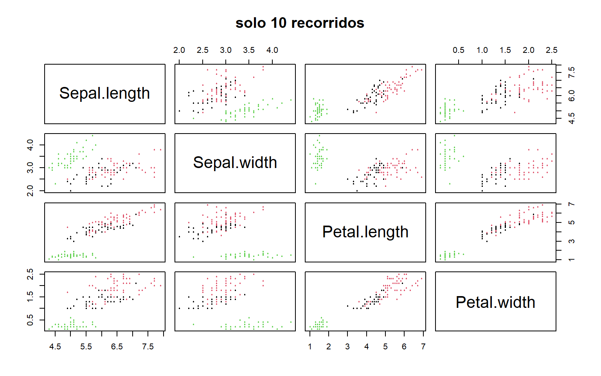
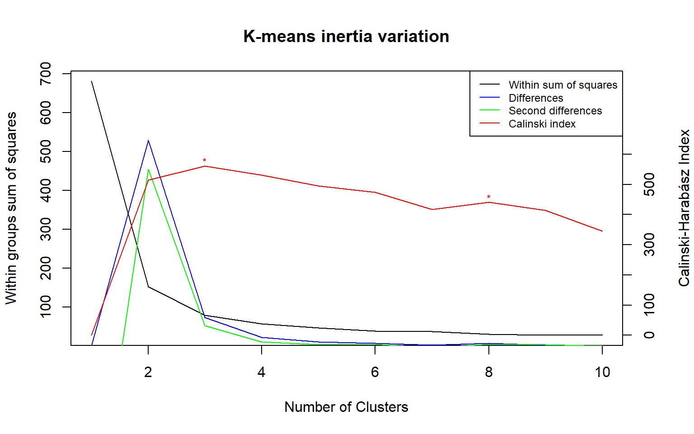
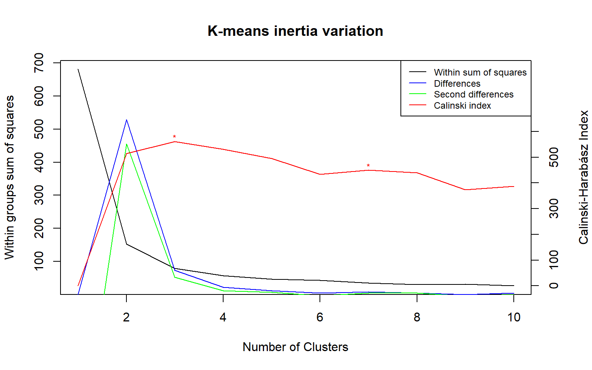
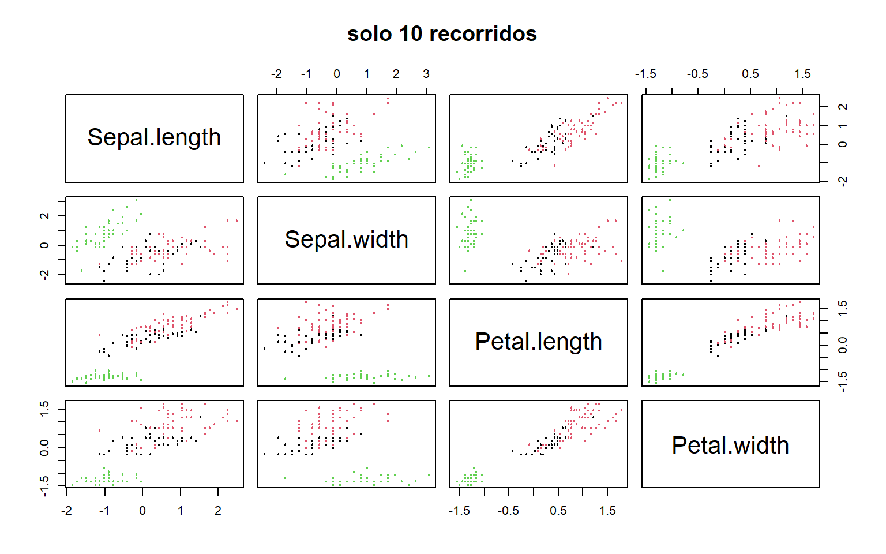
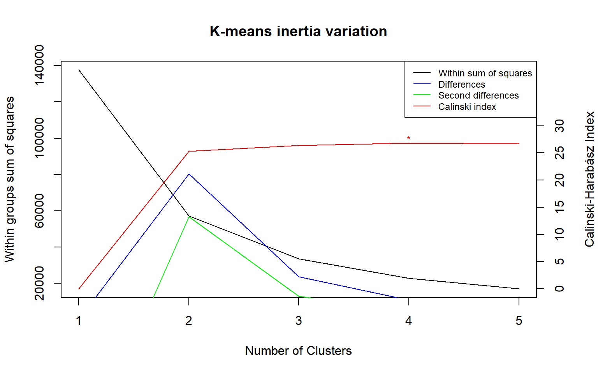
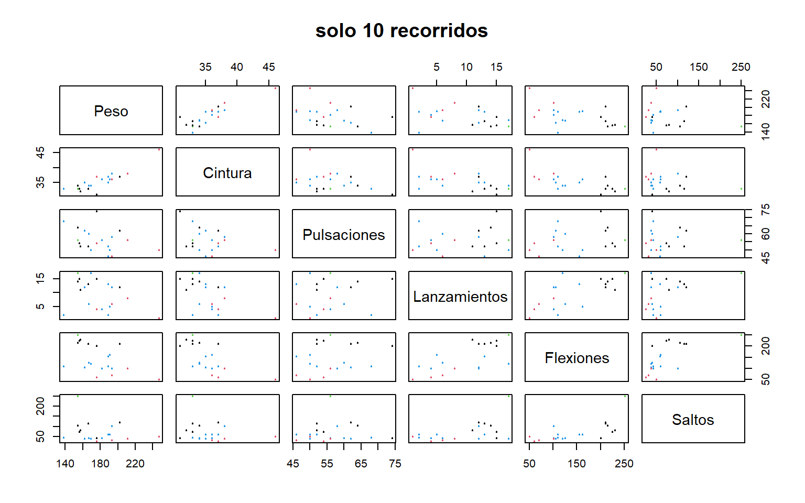
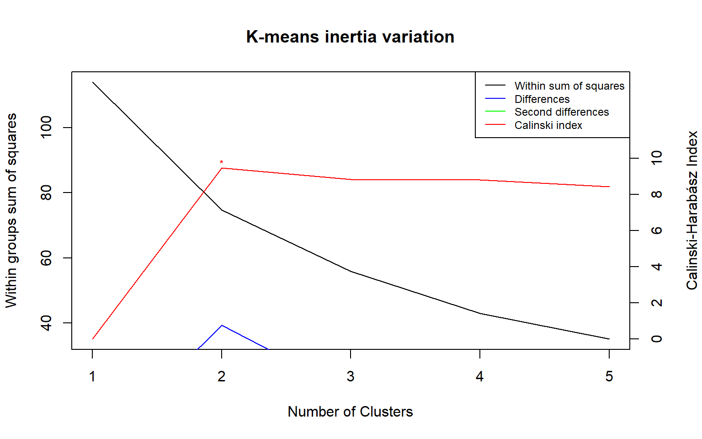
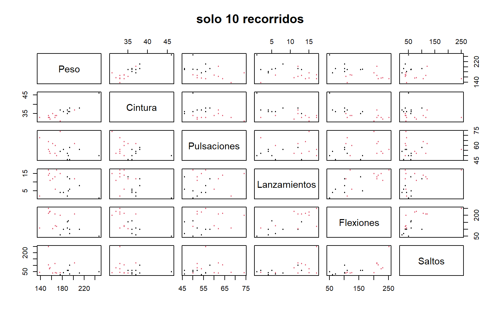

Maestria en Modelizacion Matemática y computación - IMCA
Estadistica inferecial y analisis de datos
Tarea 8
Problema 2
Con los datos de Iris, correr la clasificación k-means con 3 grupos.
set.seed(123)
setwd("D:/accesos rapidos/Documentos/R/Clase VIII")
iris <-read.table(
file = "Iris.csv",
header = T,
sep = ",",
dec = ".",
stringsAsFactors = F
) #importamos el .csv
#cl <- kmeans(iris[,1:4],3 , nstart = 10,trace = FALSE) # un 10 recorridos
#saveRDS(cl, "modelo1.rds")# Guardar modelo
(cl <- readRDS("modelo1.rds"))# Cargar modelo## K-means clustering with 3 clusters of sizes 38, 62, 50
##
## Cluster means:
## Sepal.Length Sepal.Width Petal.Length Petal.Width
## 1 6.850000 3.073684 5.742105 2.071053
## 2 5.901613 2.748387 4.393548 1.433871
## 3 5.006000 3.428000 1.462000 0.246000
##
## Clustering vector:
## [1] 3 3 3 3 3 3 3 3 3 3 3 3 3 3 3 3 3 3 3 3 3 3 3 3 3 3 3 3 3 3 3 3 3 3 3 3 3
## [38] 3 3 3 3 3 3 3 3 3 3 3 3 3 2 2 1 2 2 2 2 2 2 2 2 2 2 2 2 2 2 2 2 2 2 2 2 2
## [75] 2 2 2 1 2 2 2 2 2 2 2 2 2 2 2 2 2 2 2 2 2 2 2 2 2 2 1 2 1 1 1 1 2 1 1 1 1
## [112] 1 1 2 2 1 1 1 1 2 1 2 1 2 1 1 2 2 1 1 1 1 1 2 1 1 1 1 2 1 1 1 2 1 1 1 2 1
## [149] 1 2
##
## Within cluster sum of squares by cluster:
## [1] 23.87947 39.82097 15.15100
## (between_SS / total_SS = 88.4 %)
##
## Available components:
##
## [1] "cluster" "centers" "totss" "withinss" "tot.withinss"
## [6] "betweenss" "size" "iter" "ifault"plot(iris[,1:4], col = cl$cluster, pch=20, cex=.5,main="solo 10 recorridos") # plot
points(cl$centers, col = 1:5, pch = 8) 
Problema 3
¿Se corresponde a la clasificación en tres especies? Cuales flores están mal clasificados?
cluster <-factor(cl$cluster, labels = c("setosa","virginica","versicolor"), levels = 3:1)
log <- iris[!cluster == iris[[5]],]
nrow(log)## [1] 16hay 16 flores que estan mal clasificados las cuales son
## Sepal.length Sepal.width Petal.length Petal.width Species
## 53 7.1 3.0 5.9 2.1 virginica
## 78 6.1 3.0 4.9 1.8 virginica
## 102 6.4 3.2 4.5 1.5 versicolor
## 107 6.3 3.3 4.7 1.6 versicolor
## 114 6.1 2.9 4.7 1.4 versicolor
## 115 5.6 2.9 3.6 1.3 versicolor
## 120 5.6 2.5 3.9 1.1 versicolor
## 122 6.1 2.8 4.0 1.3 versicolor
## 124 6.1 2.8 4.7 1.2 versicolor
## 127 6.8 2.8 4.8 1.4 versicolor
## 128 6.7 3.0 5.0 1.7 versicolor
## 134 6.0 2.7 5.1 1.6 versicolor
## 139 5.6 3.0 4.1 1.3 versicolor
## 143 5.8 2.6 4.0 1.2 versicolor
## 147 5.7 2.9 4.2 1.3 versicolor
## 150 5.7 2.8 4.1 1.3 versicolorProblema 4
Calcular la razón de correlación y su tabla de “breakdown” sobre los tres grupos resultantes de la clasificación.
Creamos una funcion que calcule la tabla de breakdown de la tarea pasada
breakdown <- function(dato_cuantitativo,dato_cualitativo){
#Estadisticas descriptivas
n <- length(dato_cuantitativo)
m <- mean(dato_cuantitativo)
v <- var(dato_cuantitativo)*(n-1)/n
s <- sqrt(v)
cvt <- s/m
total <- rbind(n,m,v,s,cvt)
#Tabla de promedios
n_unit <- table(dato_cualitativo)
mean <- tapply(dato_cuantitativo,dato_cualitativo,mean)
var <- tapply(dato_cuantitativo,dato_cualitativo,var)
stdev <- sqrt(var)
cv <- stdev/mean
brk <- rbind(n_unit,mean,var,stdev,cv)
#Uniendo ambas tablas
brtot <- cbind(brk,total)
colnames(brtot) <- c(colnames(brk),"Total")
#Razon de correlacion empirica
e <- sum(n_unit*(mean-m)^2)/(n*v)
res <- list(brtot,e)
names(res) <- c("Tabla Breakdown","razon de correlacion empirica")
return(res)
}
breakdown(iris_test$Sepal.length,iris_test$Species)## $`Tabla Breakdown`
## setosa virginica versicolor Total
## n_unit 50.00000000 62.00000000 38.00000000 150.0000000
## mean 5.00600000 6.46290323 5.93421053 5.8433333
## var 0.12424898 0.40499471 0.32987909 0.6811222
## stdev 0.35248969 0.63639195 0.57435102 0.8253013
## cv 0.07041344 0.09846843 0.09678642 0.1412381
##
## $`razon de correlacion empirica`
## [1] 0.5791416Creamos una funcion final
break_total <- function(iris_test,corr=FALSE){
n <- as.numeric(ncol(iris_test)-1)
if (corr==TRUE){
vector_corr <- c()
for (i in 1:n){
vector_corr[i] <- breakdown(iris_test[[i]],iris_test[[n+1]])$"razon de correlacion empirica"[[1]]
}
names(vector_corr) <- colnames(iris_test[1:n])
cat("La razon de correlacion que se distingue mas es",max(vector_corr),"de la variable",names(which.max(vector_corr)),"\n")
cat("Vector de correlacion: \n")
return(vector_corr)
}
else{
lista_estadistica <- list()
for (i in 1:n){
lista_estadistica[[i]] <- breakdown(iris_test[[i]],iris_test[[n+1]])$"Tabla Breakdown"
}
names(lista_estadistica) <- colnames(iris_test[,1:n])
cat("La tabla breakdown por columna es \n")
return(lista_estadistica)
}
}La tabla breakdown es
## $`Tabla Breakdown`
## setosa versicolor virginica Total
## n_unit 50.00000000 50.00000000 50.00000000 150.0000000
## mean 5.00600000 5.93600000 6.58800000 5.8433333
## var 0.12424898 0.26643265 0.40434286 0.6811222
## stdev 0.35248969 0.51617115 0.63587959 0.8253013
## cv 0.07041344 0.08695606 0.09652089 0.1412381
##
## $`razon de correlacion empirica`
## [1] 0.6187057La tabla de correlacion es
## La tabla breakdown por columna es## $Sepal.length
## setosa virginica versicolor Total
## n_unit 50.00000000 62.00000000 38.00000000 150.0000000
## mean 5.00600000 6.46290323 5.93421053 5.8433333
## var 0.12424898 0.40499471 0.32987909 0.6811222
## stdev 0.35248969 0.63639195 0.57435102 0.8253013
## cv 0.07041344 0.09846843 0.09678642 0.1412381
##
## $Sepal.width
## setosa virginica versicolor Total
## n_unit 50.0000000 62.0000000 38.0000000 150.0000000
## mean 3.4280000 2.9500000 2.7447368 3.0573333
## var 0.1436898 0.0950000 0.1128094 0.1887129
## stdev 0.3790644 0.3082207 0.3358711 0.4344110
## cv 0.1105789 0.1044816 0.1223691 0.1420882
##
## $Petal.length
## setosa virginica versicolor Total
## n_unit 50.00000000 62.0000000 38.0000000 150.0000000
## mean 1.46200000 5.2935484 4.2736842 3.7580000
## var 0.03015918 0.5245479 0.2965861 3.0955027
## stdev 0.17366400 0.7242568 0.5445972 1.7594041
## cv 0.11878522 0.1368188 0.1274304 0.4681756
##
## $Petal.width
## setosa virginica versicolor Total
## n_unit 50.00000000 62.0000000 38.00000000 150.0000000
## mean 0.24600000 1.8806452 1.34210526 1.1993333
## var 0.01110612 0.1428979 0.06250356 0.5771329
## stdev 0.10538559 0.3780184 0.25000711 0.7596926
## cv 0.42839670 0.2010047 0.18627981 0.6334291Problema 5
Aplicando el K-means entre 1 y 10 clases, ¿cual parece la partición
mejor?
Creamos una funcion
Kmeans_mult <- function(dat,maxcl,start,detallado=FALSE) {
n <- dim(dat)[1] # número filas
p <- dim(dat)[2] # número columnas
wss <- rep(0,maxcl) # within ss
wssd <- wss # derivada 1
wssd2 <- wss # derivada 2
CH <- wss # Calinski
ast <- rep("",maxcl) # máximos
wss[1] <- (nrow(dat)-1)*sum(apply(dat,2,var)) # SS inicial
mejores <- list() # Ponemos en una lista las mejores particiones
# Se corre una kmeans por cada partición 5 veces y se elige la mejor
for (i in 1:maxcl) { # iteración
mejores[i] <- list(kmeans(dat,centers=i,nstart=start)$cluster)
wss[i] <- sum(kmeans(dat,centers=i,nstart=start)$withinss) # wss
if (i>1) {
wssd[i] <- wss[i-1]-wss[i] # derivada
wssd2[i-1] <- wssd[i-1]-wssd[i] # 2 derivada
CH[i] <- ((wss[1] - wss[i])/(i-1))/(wss[i]/(n-i)) # Calinski
}
}
for (i in 2:(maxcl-1)) { # detect
if ((CH[i] > CH[i-1]) & (CH[i] > CH[i+1])) { # local
ast[i] <- "*" # maxima
}
}
index <- data.frame(round(cbind(wss,wssd,wssd2,CH),5),ast) # tabla
rownames(index) <- c(1:maxcl) # n clases
colnames(index) <- c("SSW","D","D2","CH","max") # nombres columnas
#################################################### graficos
par(mar=c(5, 4, 4, 4)+.1)
plot(1:maxcl, index[,1], type="l", xlab="Number of Clusters", # gráfico
ylab="Within groups sum of squares", main = "K-means inertia variation")
lines(1:maxcl, index[,2],col="blue")
lines(1:maxcl, index[,3],col="green")
legend("topright",legend=c("Within sum of squares","Differences",
"Second differences","Calinski index"),
col=c("black","blue","green","red"),lty=1,cex=0.75)
par(new = TRUE)
plot(1:maxcl, CH, type = "l", axes = FALSE, bty = "n", xlab = "",
ylab = "",col="red",ylim=c(range(CH)*1.5))
text(1:maxcl,CH, labels=ast,pos=3,col="red",cex=0.75,offset=0.01) # para poner viñetas encima de los maximos
axis(side=4, at = pretty(range(CH))) # indices a la derecha
mtext("Calinski-Harabász Index", side=4, line=3) #nombre de calinski - harabaz
par(mar=c(5, 4, 4, 2)+.1)
if(detallado == TRUE)
{
return(mejores[index$max=="*"])
}
return(index)
}Aplicando la funcion a la data para hallar los mejores del 1 al 10

## SSW D D2 CH max
## 1 681.37060 0.00000 -529.02265 0.0000
## 2 152.34795 529.02265 455.52614 513.9245
## 3 78.85144 73.49651 51.87354 561.6278 *
## 4 57.22847 21.62297 10.84068 530.7658
## 5 46.44618 10.78229 3.37610 495.5415
## 6 39.03999 7.40619 5.20334 473.8506
## 7 36.83714 2.20285 -4.64534 417.0080
## 8 29.98894 6.84819 4.64534 440.6205 *
## 9 27.78609 2.20285 3.81871 414.5753
## 10 29.40195 -1.61586 0.00000 344.9341Hallando el detallado

## [[1]]
## 1 2 3 4 5 6 7 8 9 10 11 12 13 14 15 16 17 18 19 20
## 1 1 1 1 1 1 1 1 1 1 1 1 1 1 1 1 1 1 1 1
## 21 22 23 24 25 26 27 28 29 30 31 32 33 34 35 36 37 38 39 40
## 1 1 1 1 1 1 1 1 1 1 1 1 1 1 1 1 1 1 1 1
## 41 42 43 44 45 46 47 48 49 50 51 52 53 54 55 56 57 58 59 60
## 1 1 1 1 1 1 1 1 1 1 3 2 3 3 3 3 2 3 3 3
## 61 62 63 64 65 66 67 68 69 70 71 72 73 74 75 76 77 78 79 80
## 3 3 3 2 2 3 3 3 3 2 3 2 3 2 3 3 2 2 3 3
## 81 82 83 84 85 86 87 88 89 90 91 92 93 94 95 96 97 98 99 100
## 3 3 3 2 3 3 3 3 2 3 3 3 2 3 3 3 2 3 3 2
## 101 102 103 104 105 106 107 108 109 110 111 112 113 114 115 116 117 118 119 120
## 2 2 3 2 2 2 2 2 2 2 2 2 2 2 2 2 2 2 2 2
## 121 122 123 124 125 126 127 128 129 130 131 132 133 134 135 136 137 138 139 140
## 2 2 2 2 2 2 2 3 2 2 2 2 2 2 2 2 2 2 2 2
## 141 142 143 144 145 146 147 148 149 150
## 2 2 2 2 2 2 2 2 2 2
##
## [[2]]
## 1 2 3 4 5 6 7 8 9 10 11 12 13 14 15 16 17 18 19 20
## 3 2 2 2 3 3 2 3 2 2 3 2 2 2 3 3 3 3 3 3
## 21 22 23 24 25 26 27 28 29 30 31 32 33 34 35 36 37 38 39 40
## 3 3 2 3 2 2 3 3 3 2 2 3 3 3 2 2 3 3 2 3
## 41 42 43 44 45 46 47 48 49 50 51 52 53 54 55 56 57 58 59 60
## 3 2 2 3 3 2 3 2 3 2 5 4 1 5 5 1 7 1 5 1
## 61 62 63 64 65 66 67 68 69 70 71 72 73 74 75 76 77 78 79 80
## 5 4 5 4 4 5 5 1 1 4 5 4 1 4 5 1 4 4 5 1
## 81 82 83 84 85 86 87 88 89 90 91 92 93 94 95 96 97 98 99 100
## 1 1 5 4 4 1 5 5 4 5 5 5 4 5 5 5 4 5 5 4
## 101 102 103 104 105 106 107 108 109 110 111 112 113 114 115 116 117 118 119 120
## 6 6 6 7 6 7 6 7 6 7 7 7 7 6 7 6 7 7 4 7
## 121 122 123 124 125 126 127 128 129 130 131 132 133 134 135 136 137 138 139 140
## 4 7 4 6 6 6 6 6 6 7 7 7 7 4 7 6 6 6 7 7
## 141 142 143 144 145 146 147 148 149 150
## 7 6 7 7 7 7 7 6 7 7Problema 6
Estandarizar los datos de Iris, empleando el comando scale(X, center=TRUE,scale=TRUE), con X el archivo Iris, limitadamente a las cuatro mediciones, y re-correr el k-means.
iris[,1:4] <- scale(iris[,1:4], center=TRUE,scale=TRUE)
#cl2 <- kmeans(iris[,1:4],3 , nstart = 10,trace = FALSE) # un 10 recorridos
#saveRDS(cl2, "modelo2.rds")# Guardar modelo
(cl2 <- readRDS("modelo2.rds"))# Cargar modelo## K-means clustering with 3 clusters of sizes 47, 50, 53
##
## Cluster means:
## Sepal.length Sepal.width Petal.length Petal.width
## 1 1.13217737 0.08812645 0.9928284 1.0141287
## 2 -1.01119138 0.85041372 -1.3006301 -1.2507035
## 3 -0.05005221 -0.88042696 0.3465767 0.2805873
##
## Clustering vector:
## 1 2 3 4 5 6 7 8 9 10 11 12 13 14 15 16 17 18 19 20
## 2 2 2 2 2 2 2 2 2 2 2 2 2 2 2 2 2 2 2 2
## 21 22 23 24 25 26 27 28 29 30 31 32 33 34 35 36 37 38 39 40
## 2 2 2 2 2 2 2 2 2 2 2 2 2 2 2 2 2 2 2 2
## 41 42 43 44 45 46 47 48 49 50 51 52 53 54 55 56 57 58 59 60
## 2 2 2 2 2 2 2 2 2 2 1 3 1 1 1 1 3 1 1 1
## 61 62 63 64 65 66 67 68 69 70 71 72 73 74 75 76 77 78 79 80
## 1 1 1 3 3 1 1 1 1 3 1 3 1 3 1 1 3 1 1 1
## 81 82 83 84 85 86 87 88 89 90 91 92 93 94 95 96 97 98 99 100
## 1 1 1 3 3 1 1 1 3 1 1 1 3 1 1 1 3 1 1 3
## 101 102 103 104 105 106 107 108 109 110 111 112 113 114 115 116 117 118 119 120
## 1 1 1 3 3 3 1 3 3 3 3 3 3 3 3 1 3 3 3 3
## 121 122 123 124 125 126 127 128 129 130 131 132 133 134 135 136 137 138 139 140
## 1 3 3 3 3 1 1 1 3 3 3 3 3 3 3 1 1 3 3 3
## 141 142 143 144 145 146 147 148 149 150
## 3 3 3 3 3 3 3 3 3 3
##
## Within cluster sum of squares by cluster:
## [1] 47.45019 47.35062 44.08754
## (between_SS / total_SS = 76.7 %)
##
## Available components:
##
## [1] "cluster" "centers" "totss" "withinss" "tot.withinss"
## [6] "betweenss" "size" "iter" "ifault"plot(iris[,1:4], col = cl$cluster, pch=20, cex=.5,main="solo 10 recorridos") # plot
points(cl2$centers, col = 1:5, pch = 8)
Problema 7
¿Se encuentran resultados mejores o peores? (para el breakdown, solo emplear la clasificación salida, pero siempre las mediciones de Iris).
cluster <-factor(cl2$cluster, labels = c("setosa","virginica","versicolor"), levels = c(2,1,3))
log <- iris[!cluster == iris[[5]],]
nrow(log)## [1] 25Hay 25 flores que estan mal clasificadas lo cual ha empeorado
relativamente poco
tabla breakdown
## La tabla breakdown por columna es## $Sepal.length
## setosa virginica versicolor Total
## n_unit 50.0000000 47.0000000 53.00000000 1.500000e+02
## mean -1.0111914 1.1321774 -0.05005221 -4.482842e-16
## var 0.1812019 0.3510494 0.23978563 9.933333e-01
## stdev 0.4256782 0.5924942 0.48967911 9.966611e-01
## cv -0.4209670 0.5233228 -9.78336605 -2.223280e+15
##
## $Sepal.width
## setosa virginica versicolor Total
## n_unit 50.0000000 47.00000000 53.0000000 1.500000e+02
## mean 0.8504137 0.08812645 -0.8804270 2.031437e-16
## var 0.7563440 0.36149785 0.3404234 9.933333e-01
## stdev 0.8696804 0.60124691 0.5834581 9.966611e-01
## cv 1.0226557 6.82254787 -0.6626991 4.906187e+15
##
## $Petal.length
## setosa virginica versicolor Total
## n_unit 50.000000000 47.0000000 53.0000000 1.500000e+02
## mean -1.300630090 0.9928284 0.3465767 -2.876578e-17
## var 0.009677951 0.1306232 0.1007841 9.933333e-01
## stdev 0.098376576 0.3614184 0.3174650 9.966611e-01
## cv -0.075637629 0.3640290 0.9160021 -3.464745e+16
##
## $Petal.width
## setosa virginica versicolor Total
## n_unit 50.00000000 47.0000000 53.0000000 1.500000e+02
## mean -1.25070352 1.0141287 0.2805873 -3.684643e-17
## var 0.01911532 0.1883555 0.1668443 9.933333e-01
## stdev 0.13825818 0.4339994 0.4084658 9.966611e-01
## cv -0.11054432 0.4279530 1.4557530 -2.704905e+16Problema 8
Hacer lo mismo con datos de Linnerud, pero intentando diferentes
clasificaciones y el índice CH, tanto para los datos brutos, como para
los estandarizados.
Importamos la data
linne <- read.table(
file = "Linnerud.csv",
header = T,
sep = ",",
dec = ".",
stringsAsFactors = F,
row.names = 1
); summary(linne) #importamos el .csv## Peso Cintura Pulsaciones Lanzamientos Flexiones
## Min. :138.0 Min. :31.0 Min. :46.0 Min. : 1.00 Min. : 50.0
## 1st Qu.:160.8 1st Qu.:33.0 1st Qu.:51.5 1st Qu.: 4.75 1st Qu.:101.0
## Median :176.0 Median :35.0 Median :55.0 Median :11.50 Median :122.5
## Mean :178.6 Mean :35.4 Mean :56.1 Mean : 9.45 Mean :145.6
## 3rd Qu.:191.5 3rd Qu.:37.0 3rd Qu.:60.5 3rd Qu.:13.25 3rd Qu.:210.0
## Max. :247.0 Max. :46.0 Max. :74.0 Max. :17.00 Max. :251.0
## Saltos
## Min. : 25.00
## 1st Qu.: 39.50
## Median : 54.00
## Mean : 70.30
## 3rd Qu.: 85.25
## Max. :250.00linne$fisico <- numeric(nrow(linne))
linne_std <- scale(linne[,1:6],center=TRUE,scale=TRUE); summary(linne_std)## Peso Cintura Pulsaciones Lanzamientos
## Min. :-1.6444 Min. :-1.3742 Min. :-1.4008 Min. :-1.5985
## 1st Qu.:-0.7229 1st Qu.:-0.7495 1st Qu.:-0.6380 1st Qu.:-0.8891
## Median :-0.1053 Median :-0.1249 Median :-0.1526 Median : 0.3878
## Mean : 0.0000 Mean : 0.0000 Mean : 0.0000 Mean : 0.0000
## 3rd Qu.: 0.5225 3rd Qu.: 0.4997 3rd Qu.: 0.6102 3rd Qu.: 0.7188
## Max. : 2.7703 Max. : 3.3105 Max. : 2.4825 Max. : 1.4282
## Flexiones Saltos
## Min. :-1.5272 Min. :-0.8834
## 1st Qu.:-0.7120 1st Qu.:-0.6007
## Median :-0.3684 Median :-0.3179
## Mean : 0.0000 Mean : 0.0000
## 3rd Qu.: 1.0301 3rd Qu.: 0.2916
## Max. : 1.6854 Max. : 3.5045haciendo clasificaciones
## [1] 20
## SSW D D2 CH max
## 1 137631.50 0.000 -80471.85 0.00000
## 2 57159.65 80471.852 56825.89 25.34119
## 3 33513.68 23645.967 12940.84 26.40717
## 4 22808.56 10705.126 4861.18 26.84909 *
## 5 16964.61 5843.946 0.00 26.67322Vemos que para 4 tiene una mejor clasificacion, como hay poca informacion en la data los indices de Calinski son bajo, Veamos como se ve esta clasificacion
#cl3 <- Kmeans_mult(linne,5,10,detallado = TRUE) # un 10 recorridos
#saveRDS(cl3, "modelo3.rds")# Guardar modelo
(cl3 <- readRDS("modelo3.rds"))# Cargar modelo## [[1]]
## 1 2 3 4 5 6 7 8 9 10 11 12 13 14 15 16 17 18 19 20
## 4 4 4 4 4 4 1 4 3 2 4 3 3 1 1 3 1 3 3 4## Peso Cintura Pulsaciones Lanzamientos Flexiones Saltos Fisico
## 1 191 36 50 5 162 60 4
## 2 189 37 52 2 110 60 4
## 3 193 38 58 12 101 101 4
## 4 162 35 62 12 105 37 4
## 5 189 35 46 13 155 58 4
## 6 182 36 56 4 101 42 4
## 7 211 38 56 8 101 38 1
## 8 167 34 60 6 125 40 4
## 9 176 31 74 15 200 40 3
## 10 154 33 56 17 251 250 2
## 11 169 34 50 17 120 38 4
## 12 166 33 52 13 210 115 3
## 13 154 34 64 14 215 105 3
## 14 247 46 50 1 50 50 1
## 15 193 36 46 6 70 31 1
## 16 202 37 62 12 210 120 3
## 17 176 37 54 4 60 25 1
## 18 157 32 52 11 230 80 3
## 19 156 33 54 15 225 73 3
## 20 138 33 68 2 110 43 4##
## 1 2 3 4
## 4 1 6 9linne$Fisico <- factor(linne$Fisico,labels = c("muy sobresaliente","bajo rendimiento","alto rendimiento","regular"), levels = c(3,1,2,4))
plot(linne[,1:6], col = linne$Fisico, pch=20, cex=.5,main="solo 10 recorridos") # plot  tabla breakdown
## La tabla breakdown por columna es## $Peso
## muy sobresaliente bajo rendimiento alto rendimiento regular
## n_unit 6.0000000 4.0000000 1 9.0000000
## mean 168.5000000 206.7500000 154 175.5555556
## var 336.7000000 924.2500000 NA 332.0277778
## stdev 18.3493869 30.4014802 NA 18.2216294
## cv 0.1088984 0.1470446 NA 0.1037941
## Total
## n_unit 20.0000000
## mean 178.6000000
## var 579.1400000
## stdev 24.0653278
## cv 0.1347443
##
## $Cintura
## muy sobresaliente bajo rendimiento alto rendimiento regular
## n_unit 6.00000000 4.0000000 1 9.00000000
## mean 33.33333333 39.2500000 33 35.33333333
## var 4.26666667 20.9166667 NA 2.50000000
## stdev 2.06559112 4.5734742 NA 1.58113883
## cv 0.06196773 0.1165216 NA 0.04474921
## Total
## n_unit 20.00000000
## mean 35.40000000
## var 9.74000000
## stdev 3.12089731
## cv 0.08816094
##
## $Pulsaciones
## muy sobresaliente bajo rendimiento alto rendimiento regular
## n_unit 6.0000000 4.0000000 1 9.0000000
## mean 59.6666667 51.5000000 56 55.7777778
## var 75.8666667 19.6666667 NA 48.4444444
## stdev 8.7101473 4.4347116 NA 6.9602043
## cv 0.1459801 0.0861109 NA 0.1247845
## Total
## n_unit 20.0000000
## mean 56.1000000
## var 49.3900000
## stdev 7.0278019
## cv 0.1252728
##
## $Lanzamientos
## muy sobresaliente bajo rendimiento alto rendimiento regular
## n_unit 6.0000000 4.0000000 1 9.0000000
## mean 13.3333333 4.7500000 17 8.1111111
## var 2.6666667 8.9166667 NA 29.8611111
## stdev 1.6329932 2.9860788 NA 5.4645321
## cv 0.1224745 0.6286482 NA 0.6737094
## Total
## n_unit 20.0000000
## mean 9.4500000
## var 26.5475000
## stdev 5.1524266
## cv 0.5452303
##
## $Flexiones
## muy sobresaliente bajo rendimiento alto rendimiento regular
## n_unit 6.00000000 4.0000000 1 9.0000000
## mean 215.00000000 70.2500000 251 121.0000000
## var 120.00000000 486.9166667 NA 519.0000000
## stdev 10.95445115 22.0661883 NA 22.7815715
## cv 0.05095094 0.3141094 NA 0.1882775
## Total
## n_unit 20.0000000
## mean 145.5500000
## var 3718.8475000
## stdev 60.9823540
## cv 0.4189787
##
## $Saltos
## muy sobresaliente bajo rendimiento alto rendimiento regular
## n_unit 6.0000000 4.0000000 1 9.000000
## mean 88.8333333 36.0000000 250 53.222222
## var 926.1666667 115.3333333 NA 412.194444
## stdev 30.4329865 10.7393358 NA 20.302572
## cv 0.3425852 0.2983149 NA 0.381468
## Total
## n_unit 20.0000000
## mean 70.3000000
## var 2497.9100000
## stdev 49.9790956
## cv 0.7109402Hagamos lo mismo pero con la data estandarizada
## Peso Cintura Pulsaciones Lanzamientos Flexiones Saltos fisico
## 1 0.5022173 0.1873845 -0.84600343 -0.8418021 0.2629199 -0.2008679 0
## 2 0.4212145 0.4996919 -0.56862526 -1.4093091 -0.5681948 -0.2008679 0
## 3 0.5832201 0.8119993 0.26350927 0.4823810 -0.7120415 0.5987035 0
## 4 -0.6723232 -0.1249230 0.81826561 0.4823810 -0.6481096 -0.6494080 0
## 5 0.4212145 -0.1249230 -1.40075978 0.6715500 0.1510391 -0.2398714 0
## 6 0.1377048 0.1873845 -0.01386891 -1.0309711 -0.7120415 -0.5518993 0
## 7 1.3122453 0.8119993 -0.01386891 -0.2742951 -0.7120415 -0.6299063 0
## 8 -0.4698162 -0.4372304 0.54088744 -0.6526331 -0.3284501 -0.5909028 0
## 9 -0.1053036 -1.3741527 2.48253466 1.0498880 0.8702730 -0.5909028 0
## 10 -0.9963344 -0.7495378 -0.01386891 1.4282260 1.6854047 3.5044631 0
## 11 -0.3888134 -0.4372304 -0.84600343 1.4282260 -0.4083650 -0.6299063 0
## 12 -0.5103176 -0.7495378 -0.56862526 0.6715500 1.0301027 0.8717279 0
## 13 -0.9963344 -0.4372304 1.09564379 0.8607190 1.1100176 0.6767105 0
## 14 2.7702957 3.3104588 -0.84600343 -1.5984781 -1.5271733 -0.3958854 0
## 15 0.5832201 0.1873845 -1.40075978 -0.6526331 -1.2075138 -0.7664185 0
## 16 0.9477327 0.4996919 0.81826561 0.4823810 1.0301027 0.9692366 0
## 17 -0.1053036 0.4996919 -0.29124708 -1.0309711 -1.3673435 -0.8834289 0
## 18 -0.8748302 -1.0618453 -0.56862526 0.2932120 1.3497622 0.1891669 0
## 19 -0.9153316 -0.7495378 -0.29124708 1.0498880 1.2698474 0.0526547 0
## 20 -1.6443568 -0.7495378 1.65040014 -1.4093091 -0.5681948 -0.5323976 0haciendo clasificaciones
## [1] 20
## SSW D D2 CH max
## 1 114.00000 0.00000 -39.30449 0.00000
## 2 74.69551 39.30449 20.55965 9.47153 *
## 3 55.95066 18.74484 5.80463 8.81883
## 4 43.01045 12.94021 5.00326 8.80277
## 5 35.07350 7.93695 0.00000 8.43869Vemos que con dos clasificaciones tiene buen agrupamiento
#cl4 <- Kmeans_mult(linne_std[,1:6],5,10,detallado = TRUE) # un 20 recorridos
#saveRDS(cl4, "modelo4.rds")# Guardar modelo
(cl4 <- readRDS("modelo4.rds"))# Cargar modelo## [[1]]
## 1 2 3 4 5 6 7 8 9 10 11 12 13 14 15 16 17 18 19 20
## 1 1 1 2 1 1 1 2 2 2 2 2 2 1 1 2 1 2 2 2## Peso Cintura Pulsaciones Lanzamientos Flexiones Saltos fisico
## 1 191 36 50 5 162 60 1
## 2 189 37 52 2 110 60 1
## 3 193 38 58 12 101 101 1
## 4 162 35 62 12 105 37 2
## 5 189 35 46 13 155 58 1
## 6 182 36 56 4 101 42 1
## 7 211 38 56 8 101 38 1
## 8 167 34 60 6 125 40 2
## 9 176 31 74 15 200 40 2
## 10 154 33 56 17 251 250 2
## 11 169 34 50 17 120 38 2
## 12 166 33 52 13 210 115 2
## 13 154 34 64 14 215 105 2
## 14 247 46 50 1 50 50 1
## 15 193 36 46 6 70 31 1
## 16 202 37 62 12 210 120 2
## 17 176 37 54 4 60 25 1
## 18 157 32 52 11 230 80 2
## 19 156 33 54 15 225 73 2
## 20 138 33 68 2 110 43 2Dandole forma a la data
linne_std$fisico <- factor(linne_std$fisico,labels = c("bajo_rendimiento","alto_rendimiento"), levels = 1:2)
linne_std## Peso Cintura Pulsaciones Lanzamientos Flexiones Saltos fisico
## 1 191 36 50 5 162 60 bajo_rendimiento
## 2 189 37 52 2 110 60 bajo_rendimiento
## 3 193 38 58 12 101 101 bajo_rendimiento
## 4 162 35 62 12 105 37 alto_rendimiento
## 5 189 35 46 13 155 58 bajo_rendimiento
## 6 182 36 56 4 101 42 bajo_rendimiento
## 7 211 38 56 8 101 38 bajo_rendimiento
## 8 167 34 60 6 125 40 alto_rendimiento
## 9 176 31 74 15 200 40 alto_rendimiento
## 10 154 33 56 17 251 250 alto_rendimiento
## 11 169 34 50 17 120 38 alto_rendimiento
## 12 166 33 52 13 210 115 alto_rendimiento
## 13 154 34 64 14 215 105 alto_rendimiento
## 14 247 46 50 1 50 50 bajo_rendimiento
## 15 193 36 46 6 70 31 bajo_rendimiento
## 16 202 37 62 12 210 120 alto_rendimiento
## 17 176 37 54 4 60 25 bajo_rendimiento
## 18 157 32 52 11 230 80 alto_rendimiento
## 19 156 33 54 15 225 73 alto_rendimiento
## 20 138 33 68 2 110 43 alto_rendimiento Haciendo una tabla breakdown
## La tabla breakdown por columna es## $Peso
## bajo_rendimiento alto_rendimiento Total
## n_unit 9.0000000 11.00000000 20.0000000
## mean 196.7777778 163.72727273 178.6000000
## var 444.6944444 261.81818182 579.1400000
## stdev 21.0877795 16.18079670 24.0653278
## cv 0.1071655 0.09882774 0.1347443
##
## $Cintura
## bajo_rendimiento alto_rendimiento Total
## n_unit 9.00000000 11.00000000 20.00000000
## mean 37.66666667 33.54545455 35.40000000
## var 10.75000000 2.47272727 9.74000000
## stdev 3.27871926 1.57249079 3.12089731
## cv 0.08704564 0.04687642 0.08816094
##
## $Pulsaciones
## bajo_rendimiento alto_rendimiento Total
## n_unit 9.00000000 11.0000000 20.0000000
## mean 52.00000000 59.4545455 56.1000000
## var 19.00000000 56.0727273 49.3900000
## stdev 4.35889894 7.4881725 7.0278019
## cv 0.08382498 0.1259479 0.1252728
##
## $Lanzamientos
## bajo_rendimiento alto_rendimiento Total
## n_unit 9.0000000 11.0000000 20.0000000
## mean 6.1111111 12.1818182 9.4500000
## var 17.3611111 20.9636364 26.5475000
## stdev 4.1666667 4.5786064 5.1524266
## cv 0.6818182 0.3758557 0.5452303
##
## $Flexiones
## bajo_rendimiento alto_rendimiento Total
## n_unit 9.0000000 11.0000000 20.0000000
## mean 101.1111111 181.9090909 145.5500000
## var 1495.1111111 3010.0909091 3718.8475000
## stdev 38.6666667 54.8642954 60.9823540
## cv 0.3824176 0.3016028 0.4189787
##
## $Saltos
## bajo_rendimiento alto_rendimiento Total
## n_unit 9.0000000 11.0000000 20.0000000
## mean 51.6666667 85.5454545 70.3000000
## var 504.2500000 4024.2727273 2497.9100000
## stdev 22.4555116 63.4371557 49.9790956
## cv 0.4346228 0.7415608 0.7109402Problema 9
¿Cual clasificación le parece mejor?
## La tabla breakdown por columna es## $Peso
## bajo_rendimiento alto_rendimiento Total
## n_unit 9.0000000 11.00000000 20.0000000
## mean 196.7777778 163.72727273 178.6000000
## var 444.6944444 261.81818182 579.1400000
## stdev 21.0877795 16.18079670 24.0653278
## cv 0.1071655 0.09882774 0.1347443
##
## $Cintura
## bajo_rendimiento alto_rendimiento Total
## n_unit 9.00000000 11.00000000 20.00000000
## mean 37.66666667 33.54545455 35.40000000
## var 10.75000000 2.47272727 9.74000000
## stdev 3.27871926 1.57249079 3.12089731
## cv 0.08704564 0.04687642 0.08816094
##
## $Pulsaciones
## bajo_rendimiento alto_rendimiento Total
## n_unit 9.00000000 11.0000000 20.0000000
## mean 52.00000000 59.4545455 56.1000000
## var 19.00000000 56.0727273 49.3900000
## stdev 4.35889894 7.4881725 7.0278019
## cv 0.08382498 0.1259479 0.1252728
##
## $Lanzamientos
## bajo_rendimiento alto_rendimiento Total
## n_unit 9.0000000 11.0000000 20.0000000
## mean 6.1111111 12.1818182 9.4500000
## var 17.3611111 20.9636364 26.5475000
## stdev 4.1666667 4.5786064 5.1524266
## cv 0.6818182 0.3758557 0.5452303
##
## $Flexiones
## bajo_rendimiento alto_rendimiento Total
## n_unit 9.0000000 11.0000000 20.0000000
## mean 101.1111111 181.9090909 145.5500000
## var 1495.1111111 3010.0909091 3718.8475000
## stdev 38.6666667 54.8642954 60.9823540
## cv 0.3824176 0.3016028 0.4189787
##
## $Saltos
## bajo_rendimiento alto_rendimiento Total
## n_unit 9.0000000 11.0000000 20.0000000
## mean 51.6666667 85.5454545 70.3000000
## var 504.2500000 4024.2727273 2497.9100000
## stdev 22.4555116 63.4371557 49.9790956
## cv 0.4346228 0.7415608 0.7109402## La tabla breakdown por columna es## $Peso
## muy sobresaliente bajo rendimiento alto rendimiento regular
## n_unit 6.0000000 4.0000000 1 9.0000000
## mean 168.5000000 206.7500000 154 175.5555556
## var 336.7000000 924.2500000 NA 332.0277778
## stdev 18.3493869 30.4014802 NA 18.2216294
## cv 0.1088984 0.1470446 NA 0.1037941
## Total
## n_unit 20.0000000
## mean 178.6000000
## var 579.1400000
## stdev 24.0653278
## cv 0.1347443
##
## $Cintura
## muy sobresaliente bajo rendimiento alto rendimiento regular
## n_unit 6.00000000 4.0000000 1 9.00000000
## mean 33.33333333 39.2500000 33 35.33333333
## var 4.26666667 20.9166667 NA 2.50000000
## stdev 2.06559112 4.5734742 NA 1.58113883
## cv 0.06196773 0.1165216 NA 0.04474921
## Total
## n_unit 20.00000000
## mean 35.40000000
## var 9.74000000
## stdev 3.12089731
## cv 0.08816094
##
## $Pulsaciones
## muy sobresaliente bajo rendimiento alto rendimiento regular
## n_unit 6.0000000 4.0000000 1 9.0000000
## mean 59.6666667 51.5000000 56 55.7777778
## var 75.8666667 19.6666667 NA 48.4444444
## stdev 8.7101473 4.4347116 NA 6.9602043
## cv 0.1459801 0.0861109 NA 0.1247845
## Total
## n_unit 20.0000000
## mean 56.1000000
## var 49.3900000
## stdev 7.0278019
## cv 0.1252728
##
## $Lanzamientos
## muy sobresaliente bajo rendimiento alto rendimiento regular
## n_unit 6.0000000 4.0000000 1 9.0000000
## mean 13.3333333 4.7500000 17 8.1111111
## var 2.6666667 8.9166667 NA 29.8611111
## stdev 1.6329932 2.9860788 NA 5.4645321
## cv 0.1224745 0.6286482 NA 0.6737094
## Total
## n_unit 20.0000000
## mean 9.4500000
## var 26.5475000
## stdev 5.1524266
## cv 0.5452303
##
## $Flexiones
## muy sobresaliente bajo rendimiento alto rendimiento regular
## n_unit 6.00000000 4.0000000 1 9.0000000
## mean 215.00000000 70.2500000 251 121.0000000
## var 120.00000000 486.9166667 NA 519.0000000
## stdev 10.95445115 22.0661883 NA 22.7815715
## cv 0.05095094 0.3141094 NA 0.1882775
## Total
## n_unit 20.0000000
## mean 145.5500000
## var 3718.8475000
## stdev 60.9823540
## cv 0.4189787
##
## $Saltos
## muy sobresaliente bajo rendimiento alto rendimiento regular
## n_unit 6.0000000 4.0000000 1 9.000000
## mean 88.8333333 36.0000000 250 53.222222
## var 926.1666667 115.3333333 NA 412.194444
## stdev 30.4329865 10.7393358 NA 20.302572
## cv 0.3425852 0.2983149 NA 0.381468
## Total
## n_unit 20.0000000
## mean 70.3000000
## var 2497.9100000
## stdev 49.9790956
## cv 0.7109402## Peso Cintura Pulsaciones Lanzamientos Flexiones Saltos Fisico
## 1 191 36 50 5 162 60 regular
## 2 189 37 52 2 110 60 regular
## 3 193 38 58 12 101 101 regular
## 4 162 35 62 12 105 37 regular
## 5 189 35 46 13 155 58 regular
## 6 182 36 56 4 101 42 regular
## 7 211 38 56 8 101 38 bajo rendimiento
## 8 167 34 60 6 125 40 regular
## 9 176 31 74 15 200 40 muy sobresaliente
## 10 154 33 56 17 251 250 alto rendimiento
## 11 169 34 50 17 120 38 regular
## 12 166 33 52 13 210 115 muy sobresaliente
## 13 154 34 64 14 215 105 muy sobresaliente
## 14 247 46 50 1 50 50 bajo rendimiento
## 15 193 36 46 6 70 31 bajo rendimiento
## 16 202 37 62 12 210 120 muy sobresaliente
## 17 176 37 54 4 60 25 bajo rendimiento
## 18 157 32 52 11 230 80 muy sobresaliente
## 19 156 33 54 15 225 73 muy sobresaliente
## 20 138 33 68 2 110 43 regular
## linne_std$fisico
## 1 bajo_rendimiento
## 2 bajo_rendimiento
## 3 bajo_rendimiento
## 4 alto_rendimiento
## 5 bajo_rendimiento
## 6 bajo_rendimiento
## 7 bajo_rendimiento
## 8 alto_rendimiento
## 9 alto_rendimiento
## 10 alto_rendimiento
## 11 alto_rendimiento
## 12 alto_rendimiento
## 13 alto_rendimiento
## 14 bajo_rendimiento
## 15 bajo_rendimiento
## 16 alto_rendimiento
## 17 bajo_rendimiento
## 18 alto_rendimiento
## 19 alto_rendimiento
## 20 alto_rendimientoLigeramente mejor es estandarizado